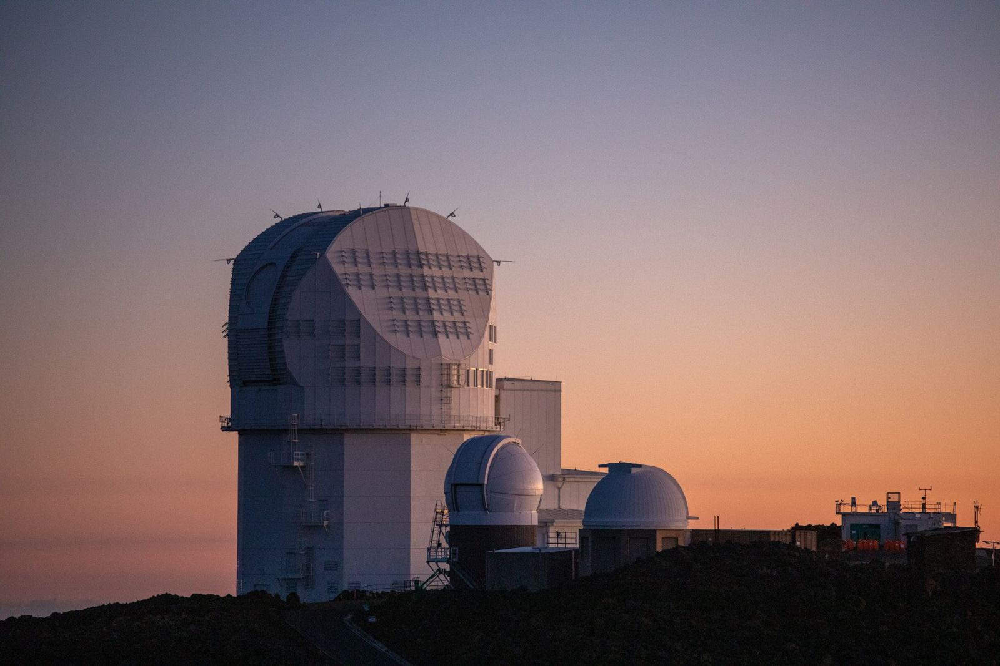

PG. 03 About & method
Fifteen years of reading the same star.
I came to heliophysics through a physics degree and a doctorate in solar physics, and stayed for a simple reason: the Sun is the one star whose weather we can watch being made. I spent a decade inside observatory analysis teams and on an operations-support desk — the unglamorous chair where flare catalogues get built and duty officers get their answers at 3 a.m. — before opening this practice in 2019.
The practice works from public data archives: the GOES X-ray flux record, SDO imagery, and the coronagraph records flown on SOHO and its successors. Working from public data is a discipline this practice chooses. Everything I hand a client can be re-derived by their own team from the same archive, and my reports are written so that they can be.
I have signed exactly one kind of sentence for fifteen years: what the instruments measured, and what they did not. Clients who need a more exciting sentence hire someone else, and I wish them clear skies.

METHOD How an analysis runs
Five steps, in order, every time.
The question is written down first
Every engagement opens with the decision the analysis has to feed — safe-mode or not, publish or hold, propose or wait. An analysis without a decision attached is a hobby, and it is priced like work here only when the decision is named.
Data is pulled, and its state is logged
Flux, imagery and coronagraph frames come from the public archives. The instrument, its calibration state and any known degradation are entered in the log before a single number is read — Case 02 in the log is what happens when this step is skipped for a decade.
The event is measured
Peak flux, class on the GOES scale, source region, duration. This is the fast part, and on its own it answers only the brightness question.
The eruption question is answered separately
Did anything leave the Sun, and in which direction? Coronagraph imagery, read frame by frame. This step is slower than step 03 and worth more; it is never skipped to make a deadline feel better.
The finding is written, with its uncertainty, and signed
Every finding states its confidence and names the observation that would change it. If that sentence cannot be written, the finding is not finished — whatever the clock says.
THE DISTINCTION THE WHOLE PRACTICE RESTS ON
A flare is light. An ejection is matter.
A flare is a brightening — energy released in the chromosphere and corona, gone in minutes to hours, measured by the scale on the home page. A coronal mass ejection is matter leaving: a billion tonnes of solar plasma thrown into space. The two often occur together. Often, they do not. A bright flare with no ejection sends nothing to Earth. A modest flare with a well-aimed ejection can matter far more. Any analysis that answers the brightness question and stops has done half the work — the half that was never going to hurt anybody.
THE HONESTY PAGE What I will not write
Class is brightness. Everything else is earned separately.
- No storm predictions dressed as analysis. Space-weather forecasts are probabilistic products, issued by forecast centres with models and duty rotas built for the purpose. My findings feed those judgements; they do not impersonate them.
- No impact inferred from class. An X-class label has never, by itself, damaged anything at Earth. Impact depends on matter, direction, speed and the state of Earth’s magnetosphere — each assessed separately, each with its own uncertainty.
- No false lead times. Where an arrival estimate is offered, it is given as a window with wide error bars, because that is what the physics supports. A single confident hour is a number invented for comfort.
- No silent revisions. If a finding changes when better data arrives, the change is issued as a new signed entry in the log, with the old one left standing beside it.
TERMS Engagement terms
- Quoted in writing before work starts — scope, data volume, deliverable, fee. Nothing is billed that was not quoted.
- Findings are delivered as signed reports with the data appendix attached, so the client’s own team can re-derive every number.
- One side of an event at a time: during a live event window the practice does not analyse the same event for two operators whose decisions conflict. Declared here, not discovered mid-event.
- Public data by default. Client-supplied data is accepted for calibration work and is returned or deleted at the engagement’s close, as the client directs.
Method suit the problem?
The enquiry form asks one unusual question — what decision the analysis feeds. It is step 01, starting early.
Enquire